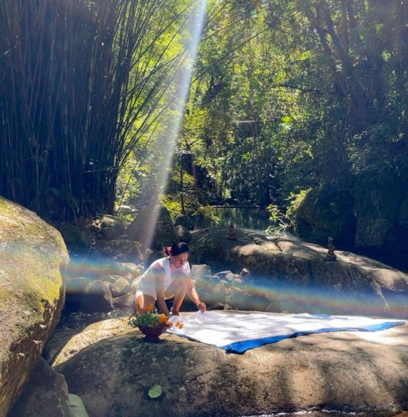
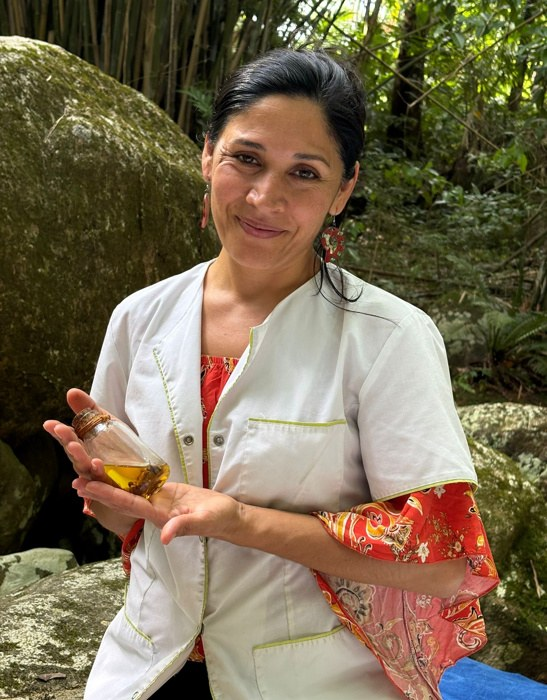
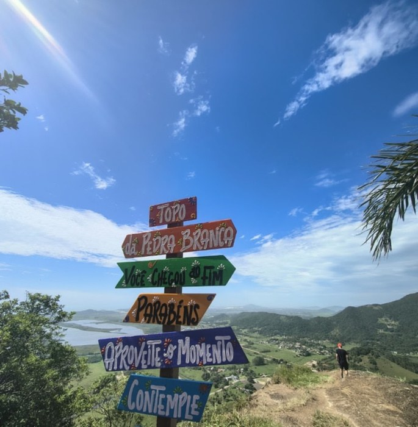
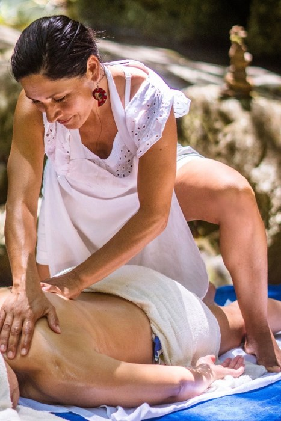
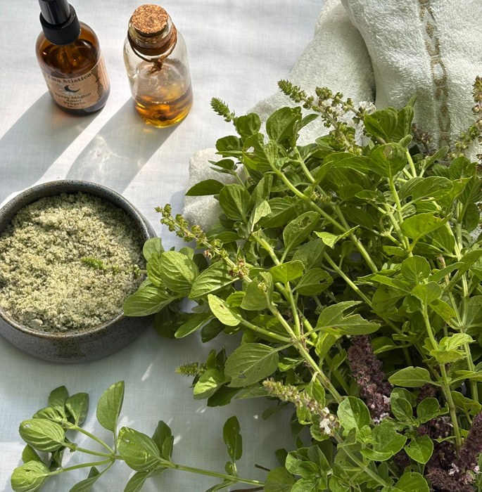
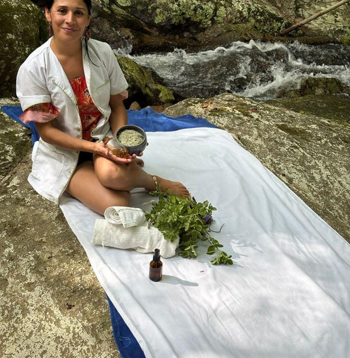

Cuidar de você é a minha maior missão
Terapias corporais, presença e escuta acolhedora
em meio à natureza de Garopaba.



Montanha Encantada • Garopaba, SC
Saúde Para Alma
Essência do cuidado
Virgínia Paz oferece um cuidado sensível que une terapias corporais, presença, escuta acolhedora e conexão com a natureza.
S.P.A significa Saúde Para Alma: um espaço de acolhimento na Montanha Encantada, pensado para relaxar, acolher e reconectar.
- Cuidado
integral - Escuta
acolhedora - Presença
e pausa - Natureza &
sensorialidade - Atendimento
personalizado
O que ofereço
Atendimentos & terapias

Um tempo para o corpo, sem pressa e com acolhimento.
- Agendar
Massagem relaxante
Um convite a desacelerar: o toque, o ritmo e a pausa compõem a experiência.
- Agendar
Massagem terapêutica
Um cuidado atento às necessidades do corpo e ao momento de cada pessoa.
- Agendar
Drenagem linfática
Técnica do repertório corporal, com indicação avaliada individualmente.
- Agendar
Top Corpus
Toques e técnicas corporais voltados ao relaxamento e à vitalidade.

Aromas, óleos e saberes que ampliam o olhar sobre o cuidado.
- Agendar
Ayurveda
Equilíbrio e bem-estar com inspiração integrativa.
- Agendar
Aromaterapia
Sensações sutis por meio de aromas e óleos, em protocolos sensoriais personalizados.
- Agendar
Reiki
Harmonização energética com delicadeza: um espaço para pausa e presença.
Chás & ervas
Elementos naturais integrados à experiência, pequenos detalhes que acolhem.

O cuidado começa pelo encontro: observar, ouvir e respeitar cada momento.
Valores e duração de cada atendimento sob consulta, pelo WhatsApp.
Montanha Encantada
Experiências na natureza
Água, pedras e vegetação compõem a atmosfera. O ritual começa antes do primeiro toque.
Ritual na cachoeira sob consulta
Preparação, água, óleos e atenção ao corpo em uma vivência especial.
Massagem ao ar livre sob consulta
Toque corporal em contato com a natureza, conforme as condições do dia.
Rituais com chá ou cacau
Momentos de acolhimento com atmosfera intimista.
Cerimônia Pedra Branca em desenvolvimento
Uma proposta de trilha, contemplação e espaço para escuta e presença.
Nem tudo precisa acontecer depressa.
Cada pessoa, um momento
Para quem & como
Para quem
- Principalmente para mulheres
- Cuidado voltado ao bem-estar feminino em diferentes fases da vida.
- Homens de todas as idades
- Atendimentos acolhedores também para o público masculino.
- Momentos de pausa
- Para quem busca relaxar, desacelerar e se reconectar.
- Jornadas de autocuidado
- Para quem valoriza presença, sensorialidade e cuidado integral.
Formatos de atendimento
- Sessões individuais
- No espaço, com cuidado sensível e personalizado.
- Montanha Encantada
- Ambiente acolhedor preparado com delicadeza, em Garopaba.
- Atendimento a domicílio sob consulta
- Na região de Garopaba, conforme disponibilidade.
- Pequenos grupos sob consulta
- Vivências e rituais em formatos especiais.
Propostas sob medida
Parcerias & hospitalidade
Experiências de bem-estar desenhadas para o seu espaço, a sua equipe ou os seus hóspedes.
Empresas
Atendimentos corporativos, pausas e protocolos de bem-estar para equipes.
Hotéis & resorts
Experiências de cuidado e acolhimento para a jornada do hóspede.
Airbnb & hospedagens
Um detalhe acolhedor durante a estadia, com organização prévia.
Retiros & eventos intimistas
Cuidado corporal e experiências sensoriais para momentos especiais.
Agendamento
Reserve o seu momento
Escolha o atendimento e o melhor dia para você. O pedido segue direto para o WhatsApp da Virgínia, que confirma o horário pessoalmente.
- +55 48 99668-5672
- @virginiaspaterapeutico
- Montanha Encantada · Garopaba, SC
Antes da sua sessão
Ficha de anamnese
Três passos rápidos para a Virgínia preparar o atendimento pensando em você.